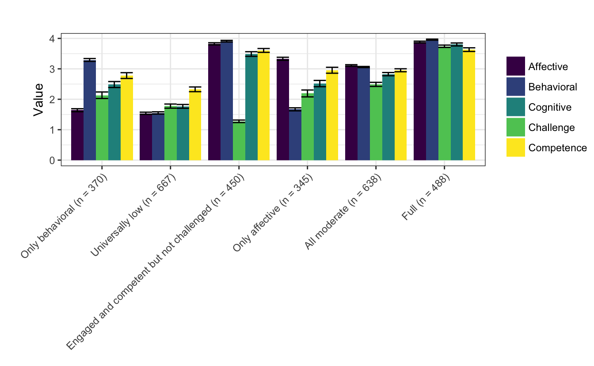
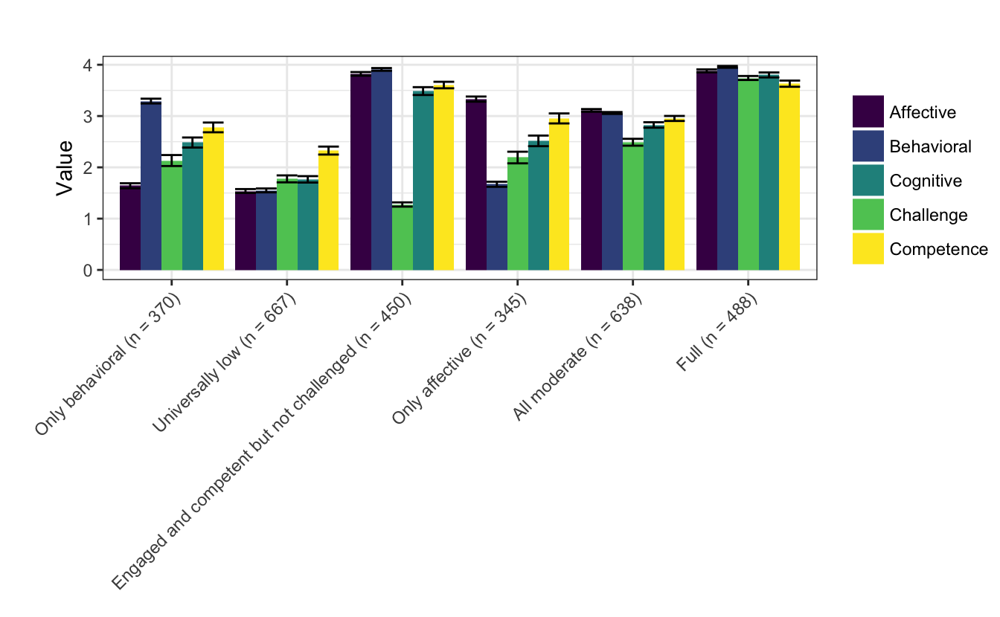

Chapter 6 Results for Research Question #2
6.0.1 Results for Research Question #2: What profiles of youth engagement and its conditions emerge from experiential data collected in the programs?
Following from the in-depth exploration of a wide range of models and the candidate solutions (described in the Appendix), a specific model is selected for use in subsequent analyses. This model was selected on the basis of a range of criteria including fit statistics, statistical tests, and concerns of interpretability and parsimony. In particular, the model one type, six profile, and model one type, seven profile solutions are described. Tthis model demonstrated superior fit on the basis of the information criteria (AIC and BIC) and on the basis of the measure of classification accuracy (entropy). It was also highly interpretable. Descriptions of other candidate solutions are included in the appendix. For this and other soltuions, the raw data and the data that are centered to have a mean equal to 0 and a standard deviation of 1 (thus, the y-axis on each of the plots is labeled “Z-score”).
This solution is characterized by:
- A full profile, profile 6
- An universally low profile, profile 2
- An all moderate profile, profile 5–and, like, the model 1, six profile solution–with moderate levels of affective engagement
- An only behaviorally engaged profile, profile 1, with moderate levels of behavioral engagement, very low affective engagement, and moderately (low) levels of cognitive engagement and challenge and competence
- An only affectively engaged profile, profile 4, with moderate levels of affective engagement, low levels of behavioral engagement, and moderately (low) levels of cognitive engagement and challenge and competence
- An engaged and competent but not challenged profile, profile 3, characterized by high levels of each of the three dimensions of engagement and of competence, but with low levels of challenge
The number of observations associated with each of the profiles is somewhat balanced, with the universally low profile with the largest number of observations (n = 667; the same number for this profile as in the model 1, five profile solution), followed by the all moderate profile (n = 638). Each of the other four profiles were associated with 300 to 400 observations. Unlike other solutions, this solution was associated with profiles that distinguished observations on the basis of both: There were profiles for only behaviorally and affectively engaged and for engaged and competent but not challenged.
 

6.0.2 Summary of research question #2 findings
After reviewing a wide range of models, a relatively simple model (model 1) with six profiles was selected for use in subsequent analyses. This model has momentary profiles of engagement and its conditions characterized by both varying levels on the dimensions of engagement and perceptions of challenge and competence. In addition, the number of observations across the profiles is relatively balanced.